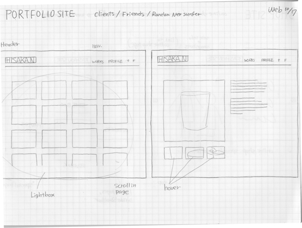
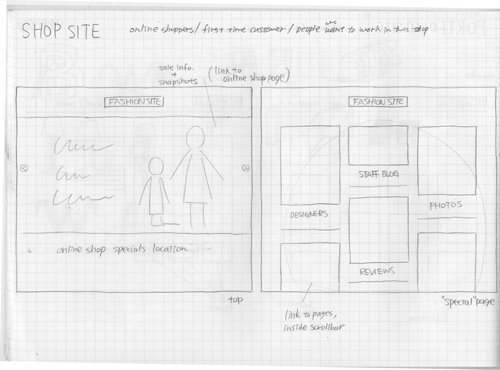

PORTFOLIO
User Stories Case 1:
Clients
They wants to see:
Able to see work quickly
Quality of my work,
Strength in my design,
Process of your work
How can I keep them interested:
Simple and easy, so they can concentrate on my works.
not too much buttons.
User Stories Case 2:
Your boss
They wants to see:
Design of your webpage
Quality
How can I keep them interested:
Well organized.
User Stories Case 3:
Your friends
They wants to see:
What type of design I adhere
What kind of design I do
How can I keep them interested:
Categorize my work
Navigation:
Profile, Contact, Works (2D, 3D, Web)

Shop (fashion site)
User Stories Case 1:
Customer who shops online
They wants to see:
Location(Map)
New style of cloth
Find new coordinate
Order online
How can I keep them interested:
well organized items
Branding
Design matched with style of shop
(depends on ages, too)
Providing new service
Sale information
User Stories Case 2:
Someone wants to work at this shop
They wants to see:
Designers,
How cool is this shop are
How can I keep them interested:
impact
shop history
Little notes from designer
interviews
User Stories Case 3:
Someone who doesn't know about this shop
They wants to see:
Style
Design
Price!!
How can I keep them interested:
Well organized by category
Informative
Navigation:
Location,Contact,Items(by category),events,reviews
